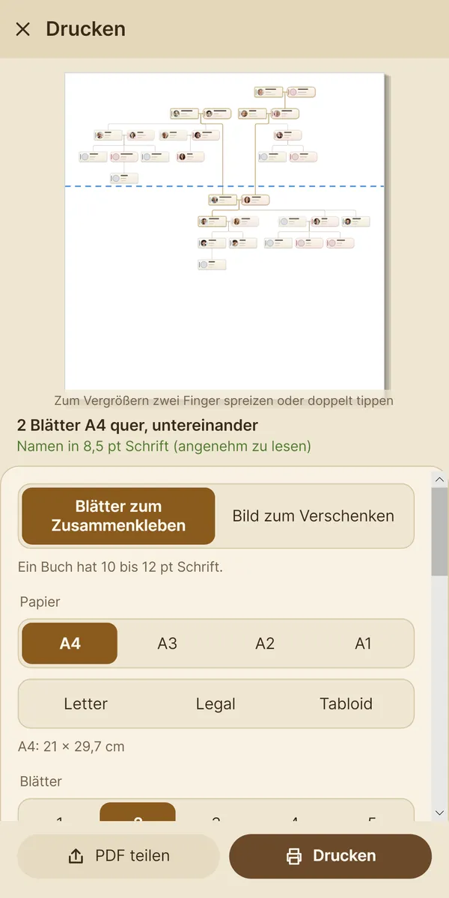

So druckst du deinen Stammbaum groß, in 50×70 cm
Ein Stammbaum wirkt erst richtig in groß, gerahmt im Wohnzimmer oder bei den Großeltern. Dieser Ratgeber erklärt, wie du das Format wählst, jeden Namen lesbar machst und ihn ohne Überraschungen drucken lässt.

1. Wähle das Format
Am praktischsten ist es, den Stammbaum im Format eines fertigen Bilderrahmens zu drucken, dann brauchst du keine Sonderanfertigung. Am leichtesten zu finden sind 30×40, 40×50 und 50×70 cm. Ramo hat sie alle, dazu A4, A3, A2 und A1.
| Format | Wofür | Wie viele Personen, ungefähr |
|---|---|---|
| A4 | Der Drucker zu Hause | Bis etwa 35 |
| A3 oder 30×40 cm | Ein mittleres Bild oder der Schreibtisch | Bis etwa 50 |
| 40×50 cm | Ein Bild für die Wand | Bis etwa 60 |
| 50×70 cm | Das große Bild im Wohnzimmer | Bis etwa 90 |
Die Zahlen gelten für Karten mit Foto und Namen in etwa 9 Punkt und hängen stark von der Form des Stammbaums ab. Rechnen musst du nicht: Ramo zeigt dir die genaue Schriftgröße vor dem Druck.
2. Bereite das Bild in Ramo vor
- Öffne den Stammbaum, tippe auf das Menü und wähle Drucken.
- Wähle oben Bild zum Verschenken und beim Papier 50×70 cm (oder die Größe deines Rahmens).
- Unter Anordnung des Stammbaums siehst du bei jeder Möglichkeit, wie groß die Namen werden. Der Stern ★ zeigt die, bei der sie am größten sind.
- Gib den Titel ein („Familie Müller“) und, wenn du magst, eine Widmung („Für Oma, Weihnachten 2026“).
- Wähle den Stil: Pergament, Papier und Tinte, Garten, Album… Jeder hat seinen eigenen Rahmen, seine Farben und seine Schrift.


3. Mach jeden Namen lesbar
Als Faustregel: 8 Punkt liest man aus der Nähe, 10 bis 12 bequem mit dem Bild in der Hand oder auf dem Tisch, und an der Wand sollten es besser über 14 sein. Werden die Namen zu klein, kannst du in Ramo:
- Eine andere Anordnung ausprobieren: Die von links nach rechts helfen bei sehr breiten Familien oft viel.
- Von den Karten weglassen, was du nicht brauchst (Foto, Jahre oder Nachnamen). Ramo zeigt, wie viel jedes davon bringt.
- Karten näher zusammen rücken oder den Rand am Rahmen schmal stellen.
- Ein größeres Format nehmen oder ein Bild pro Zweig machen (väterliche und mütterliche Seite).
Öffne die Vorschau im Vollbild und zoome mit zwei Fingern hinein: Was du siehst, wird gedruckt.
4. Speichere das PDF und lass es drucken
Tippe auf PDF teilen und schick es dir per E-Mail oder speichere es auf einem USB-Stick. Das PDF von Ramo ist vektorbasiert: Namen und Linien bleiben in jeder Größe scharf.
Im Copyshop, in der Digitaldruckerei oder bei einem Online-Posterdruck sag:
- Drucken in Originalgröße (100 %), nicht „an Seite anpassen“.
- Mattes Fotopapier oder matt gestrichenes Papier mit 170 bis 250 g: keine Spiegelungen hinter dem Glas.
- Auf Rahmengröße zuschneiden, falls das Blatt größer ist.
Und wenn ich ihn zu Hause drucken will?
Wähle Blätter zum Zusammenkleben: Ramo verteilt den Stammbaum auf mehrere A4-Blätter mit Markierungen zum Ausschneiden und Zusammenfügen und zeigt dir vorher, wie viele Blätter du brauchst und wie groß die Namen werden. Das geht auch in der kostenlosen Version.
Bilder zum Verschenken gehören zu Ramo Komplett (eine einzige Zahlung). Mit der kostenlosen Version kannst du den Stammbaum auf Blättern drucken, mit einem kleinen Hinweis „Erstellt mit Ramo“.
Weitere Ratgeber